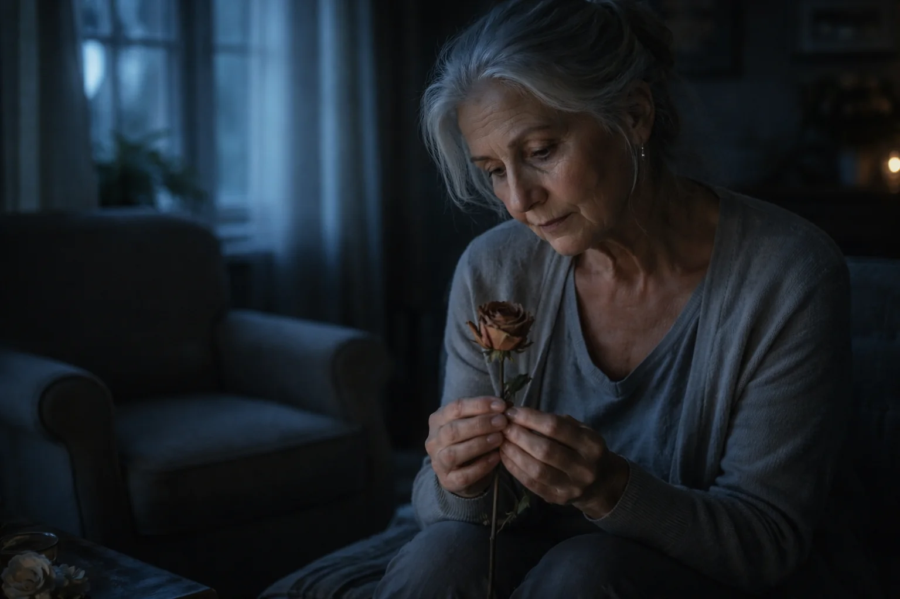

74-letnia rzemieślniczka z Bretanii likwiduje zapasy swoich świetlistych wiecznych róż przed ostatecznym zamknięciem warsztatu
List od Colette Hervé, twórczyni wiecznych róż, Vannes

Vannes – Colette Hervé, 74 lata, zakończy swoją dwunastoletnią działalność rzemieślniczą 28 lutego 2026 roku. W swoim warsztacie o powierzchni 22 m² w pobliżu portu, po raz ostatni pakuje swoje prace: świetliste róże pod szklanym kloszem, składane jedna po drugiej jej zmęczonymi rękami.
Powód zamknięcia? Gwałtownie pogarszający się wzrok, drżenie rąk i ciało, które odmawia posłuszeństwa. „Mój okulista od miesięcy błagał mnie, bym przestała” – wyznaje ze łzami w oczach. „Mówił, że jeśli nie przestanę, trwale uszkodzę swój wzrok. Miał rację”.
Zanim definitywnie opuści rolety, rzemieślniczka wyprzedaje swoje ostatnie 489 róż. Ta likwidacja to nie zwykła operacja handlowa: to koniec historii miłosnej, która poruszyła całą Bretanię.
„Chciałam, aby moje ostatnie prace znalazły domy przed Walentynkami” – wyjaśnia. „By ostatni raz rozświetliły miłość, tak jak robiły to przez 12 lat”.
Tragedia, która wszystko zaczęła: kiedy róża staje się światłem
Grudzień 2013. André Hervé, mąż Colette, odchodzi po 47 latach małżeństwa. Agresywny nowotwór. Colette została sama w domu, gdzie każdy kąt przypominał jej o jego nieobecności.
„Noc stała się moim wrogiem. Cisza i ciemność przypominały mi o pustce” – opowiada. Wszystko zmieniło się pewnego wieczoru, gdy jej wnuczka Léa, bojąc się ciemności, poprosiła o lampkę. Colette owinęła girlandę wokół materiałowej róży, którą André podarował jej lata wcześniej.
„Babciu, to wygląda jak róża z Pięknej i Bestii!” – wykrzyknęła dziewczynka. Tak narodził się pomysł na „Wieczną Różę”, która świeci w ciemności jak latarnia miłości.

387 róż rocznie, ręcznie składanych w blasku warsztatu
Każdy płatek jest wycinany ręcznie ze specjalnego perłowego papieru, a następnie delikatnie podgrzewany, by nadać mu naturalną krzywiznę. Wykonanie jednej róży zajmuje od 4 do 5 godzin. „Moje ciało powiedziało 'nie'” – podsumowuje Colette. „I tym razem muszę go posłuchać”.

Niezwykła fala solidarności
Gdy wieść o zamknięciu się rozeszła, klienci ruszyli z pomocą. Colette zdecydowała się wyprzedać ostatnie sztuki za połowę ceny, by godnie zamknąć warsztat. „To idealny prezent na Walentynki. Coś, co będzie świecić przez 20 lat, gdy kwiaty z kwiaciarni dawno zwiędną”.
Opinie klientów
✅ Nathalie i Marc, małżeństwo od 28 lat, Brest
⭐⭐⭐⭐⭐
„Mąż podarował mi ją na 20. rocznicę. Stoi na mojej szafce nocnej i co wieczór ją zapalam. To nasz rytuał. Teraz zamówiłam jedną dla córki na jej ślub”.
✅ Christine, 56 lat, Paryż
⭐⭐⭐⭐⭐
„Podarowałam ją mamie na 80. urodziny. Mieszka sama, a ta róża daje jej poczucie czyjejś obecności. To najpiękniejszy prezent, jaki mogłam jej sprawić”.
✅ Emilie, 34 lata, Lyon
⭐⭐⭐⭐⭐
„Przechodziłam przez trudny czas, a przyjaciółka dała mi tę różę, bym zawsze miała światło w ciemności. Ta mała lampka naprawdę mi pomogła. Dziękuję Colette”.
Ostatnie 489 egzemplarzy – dziedzictwo pasji
Każda róża jest unikalna. Gdy te 489 sztuk zostanie sprzedanych, warsztat zostanie zamknięty na zawsze. Wszystkie zamówienia złożone przed 10 lutego dotrą przed Walentynkami.
KLIKNIJ TUTAJ, ABY OTRZYMAĆ WIECZNĄ RÓŻĘ COLETTE Z 50% RABATEM >>